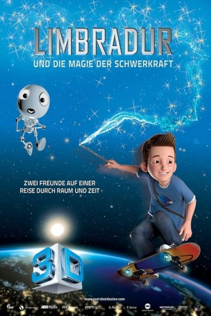

Alternativ: The Secrets of Gravity: In the Footsteps of Albert Einstein (Englischer Titel)
 
 IMDB-Wertung: 5.8 / 10
IMDB-Wertung: 5.8 / 10  Metascore:
Metascore: 
Der zwölfjährige Zauberlehrling Limbradur interessiert sich mehr für die spannenden Rätsel des Universums als für Zaubersprüche. Deshalb schleicht er sich eines Nachts heimlich in das Albert-Einstein-Museum, wo er auf den cleveren und eigensinnigen Wissensroboter Alby X3 trifft. Gemeinsam gehen die beiden auf eine fantastische Reise durch Raum und Zeit, auf der sie nicht nur die Geheimnisse der Schwerkraft, sondern auch die Kraft der Freundschaft entdecken.
Jahr: 2016
Dauer: 45 Minuten
FSK:
Land: Deutschland Studio: Reef DistributionTonspuren: DTS - ,
Untertitel:
Auflösung: 1080p (1920x1040) Größe: 2181 MB
Genre: Animation/Trick
Regisseur: Peter Popp
Drehbuch: Peter Popp
Soundtrack: Daniel Requardt, Stephan Schelens
Darsteller:
Datei: X:\Kinder Filme (G-M)\LIMBRADUR und die Magie der Schwerkraft (2016, FSK, 1920x1040) 3D.mkv seit 27.12.2018
Festplatte: Kinder-Filme+Trick
 Es gibt insgesamt 84 Filme in der Gruppe 'Kinder Filme (G-M)'
Es gibt insgesamt 84 Filme in der Gruppe 'Kinder Filme (G-M)'